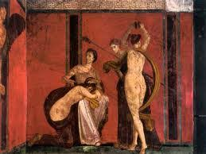
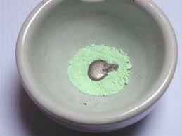
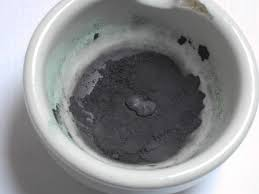
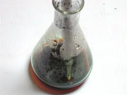
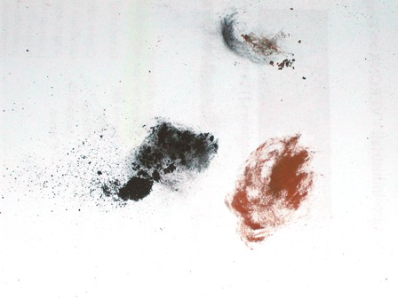

"Alchimie nell'arte" è il titolo di un bellissimo saggio in un volumetto di 235 pagine del prof. Adriano Zecchina che si legge tutto d'un fiato e non lo si vorrebbe finire così presto.
La presentazione in quarta di copertina così si conclude:
-...questo libro cambierà il vostro modo di guardare ai colori utilizzati nelle opere d'arte...-
Naturalmente la frase è rivolta al gran pubblico, proverbialmente digiunissimo di chimica, e di chimica sperimentale ancor più; a me non ha certo cambiato il modo di guardare ai colori poichè fin da piccolo sempre li ho guardati e visti nelle loro due anime: quella cromatica e quella chimica; sono due anime per me indissolubili e sempre intrecciate.
(Ma me ne guardo bene dall'esprimerlo ad alta voce: essere davanti ad un quadro di Van Eyck e vederci il solfuro di mercurio, od apprezzare il cromato di piombo in un girasole di Van Googh suonerebbero come bestemmie... la chimica non è propriamente popolare!).
A proposito di solfuro di mercurio ROSSO, mi è venuta la tentazione di provar a farlo per via umida.
In natura questo composto è conosciuto come cinabro, ed è un pigmento usato fin dall'antichità per il suo colore rosso acceso in varie tonalità; la provenienza è per lo più spagnola, istriana o toscana, ovvero dalle rare località dove si trovavano le storiche miniere di mercurio di una certa importanza.
E' un minerale stabile grazie anche alla sua estrema insolubilità, di colore dal rosso vivace al rosso scuro, a seconda della purezza e dello stato cristallino.
Il cinabro (o il vermiglione, ved. più avanti) è stato usato da tutti i pittori, dai grandi geni agli sconosciuti, in tutte le epoche, e fare degli esempi sarebbe riduttivo; tanto per dirne una, scelgo con difficoltà i celebri affreschi della Villa dei Misteri di Pompei, dove la particolare luminosità del rosso delle pareti è dato da una mescolanza di ematite e cinabro.
[Pompei, tu che ti sei salvata dall'eruzione del Vesuvio, avrai la forza di salvarti una seconda volta dall'implacabile e ancor più terrificante burocrazia italiana? Povero patrimonio dell'Umanità, in che mani sei capitato ...!]

---°°°OOO°°°---
Precipitando in laboratorio un sale solubile di mercurio con un solfuro esso si presenta sempre di colore nero (come tantissimi solfuri di metalli comuni), sotto la forma cristallina cubica.
In natura l'abito cristallino è quasi sempre più elegante e variopinto per tutti i metalli; il cinabro rosso naturale è infatti trigonale, e si può formare da quello cubico per sublimazione.
Gli artigiani quasi-alchimisti del passato lo preparavano artificialmente scaldando al rosso in recipienti di terracotta una miscela di zolfo e mercurio e raccogliendo la polvere aderente ai lunghi colli delle storte dopo averle rotte .
La polvere veniva poi lungamente macinata, fino a farle assumere il bel colore rosso identico a quello naturale.
Per distingere i due prodotti, chiamiamo allora "cinabro" il minerale e "vermiglione" quello ottenuto sinteticamente.
Esistono anche dei metodi per ottenere il vermiglione per via umida; i vari metodi sono tutti simili, differenziandosi solo per le proporzioni dei reagenti.
Nei miei giochetti di chimica sperimentale, dopo quello dell'acetoarsenito di rame o Verde di Parigi, non poteva mancare il tentativo di preparazione del vermiglione; fra le tante scelte possibili mi son rivolto al buon vecchio prof. Ettore Molinari, che nell'edizione Hoepli del 1918 (ma credo anche nelle successive) così recita riguardo il solfuro rosso di mercurio:
-"... mescolando bene 5 parti di Hg e 1 parte di solfo e scaldando poi a 45° la miscela, con una soluzione concentrata di KOH (a 45° Bè), sino a quando la polvere nera è diventata rosso-viva, si versa allora in acqua, si lava e si essicca..."-
Così parlò il Maestro e così ho fatto io, con fiducia ed eccessivo ottimismo.
Il mercurio si combina lentamente e parzialmente già a freddo con lo zolfo, ed infatti dopo la macinazione in mortaio di Hg+S si ottiene una polvere nera, formata da HgS, Hg finemente suddiviso e zolfo indecomposto.


La polvere ottenuta è stata messa in una beuta con la soluzione concentrata di idrossido di potassio e scaldata tra i 40 e i 50 gradi.

Poichè la miscela nella beuta col tempo rimaneva sempre nera, mi sono deciso a prolungare il tempo di digestione più del previsto... e sono arrivato ad una settimana! Ho poi filtrato e lavato.
L'esito tuttavia non è stato felicissimo. Il buon Molinari stavolta l'ha fatta troppo semplice, o più probabilmente si è fidato della semplicistica descrizione di qualche collaboratore senza provare l'esperienza sul campo.
Per farla breve, ho ottenuto un brutto vermiglione appena rossastro e sono convinto che anche lasciando la beuta sul termomanto per tutto il mese di novembre il colore non sarebbe cambiato.
Le fotografie mostrano la procedura ed il colore rossastro di una porzione di prodotto calcinato.

Con una robaccia del genere nemmeno Tiziano (quello dei rossi...) sarebbe riuscito a vivere decentemente vendendo quadri.
Ma ho voluto provare, scegliendo apposta questo pigmento che sapevo essere particolarmente "difficile", come effettivamente è stato.
Del resto è ragionevole pensare che tentare di riprodurre queste antiche procedure un po' empiriche una sola volta e in piccole proporzioni non porta certo ai risultati che si potrebbero ottenere con la ripetuta esperienza degli artigiani delle antiche fabbriche; sappiamo in realtà che con opportuna procedura è possibile produrre un vermiglione di sintesi dal colore rosso perfetto, migliore del migliore cinabro naturale, sempre più o meno impuro.
Ho tentato, devo dire questa prima volta senza particolare successo, di rendere un'idea di come una volta si riuscisse ad imitare la natura alla ricerca di un prodotto così importante, costoso e richiesto dagli artisti prima dell'avvento della chimica industriale, che ha reso tutto più facile.
Al giorno d'oggi nei tubetti dei pittori, pur mantenendo originali il nome e la tonalità di colore, troviamo un contenuto completamente diverso: il vermiglione HgS non è più solfuro di mercurio, il giallo cromo PbCrO4 non è più cromato di piombo, il verde di Parigi 3Cu3(AsO3)2.Cu(C2H3O2)2 non è più acetoarsenito di rame, il rosso cadmio CdSe non è più seleniuro di cadmio...
Tutti questi metalli non certo salutari sono stati spesso sostituiti da pigmenti inorganici o coloranti organici meno tossici ma altrettanto efficaci, in uno spettro cromatico oggi quasi infinito.
2 commenti